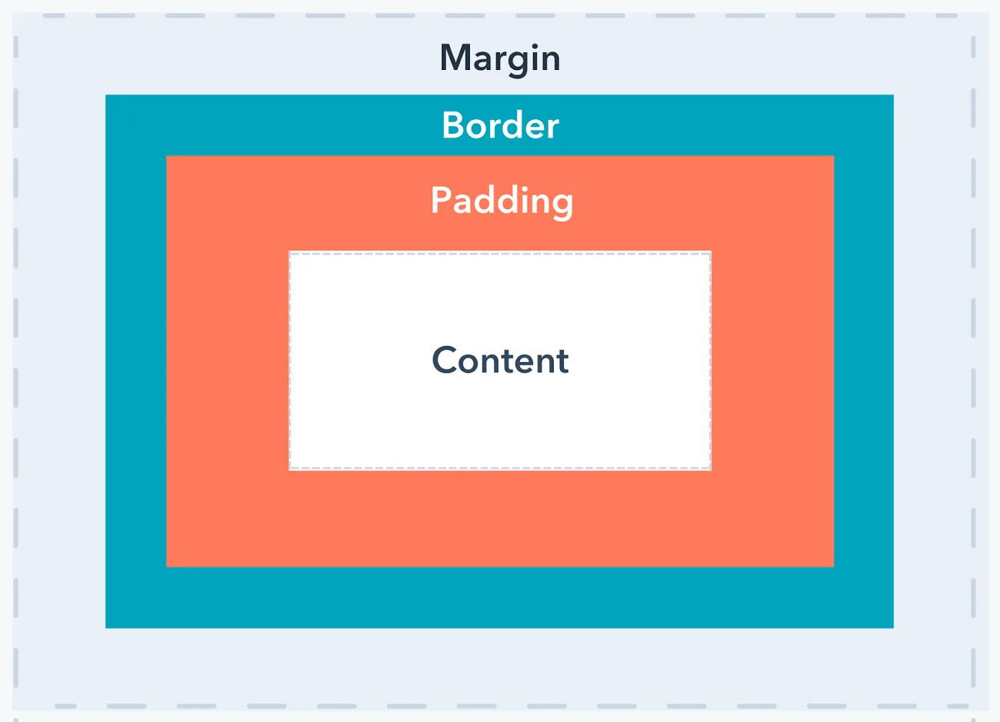

Something you'll notice about writing CSS: a lot of it is about boxes. This includes setting size, color,
and position. Most HTML elements on your page can be thought of as boxes sitting on top of other boxes.
CSS layout is mostly based on the box model. Each box taking up space on your page has properties like:
* padding, the space around the content. In the example below, it is the space around the paragraph text.
* border, the solid line that is just outside the padding.
* margin, the space around the outside of the border.

In this section we also use:
* width (of an element).
* background-color, the color behind an element's content and padding.
* color, the color of an element's content (usually text).
* text-shadow sets a drop shadow on the text inside an element.
* display sets the display mode of an element. (keep reading to learn more)
To continue, let's add more CSS. Keep adding these new rules at the bottom of style.css.
Experiment with changing values to see what happens.
Changing the page color
html {
background-color: #00539f;
}
Styling the body
body {
width: 600px;
margin: 0 auto;
background-color: #ff9500;
padding: 0 20px 20px 20px;
border: 5px solid black;
}
There are several declarations for the
You may have noticed there's a horrible gap at the top of the body. That happens because browsers
apply default styling to the h1 element (among others). That might seem like a bad idea,
but the intent is to provide basic readability for unstyled pages. To eliminate the gap,
we overwrite the browser's default styling with the setting margin: 0;.
Next, we set the heading's top and bottom padding to 20 pixels.
Following that, we set the heading text to be the same color as the HTML background color.
Finally, text-shadow applies a shadow to the text content of the element. Its four values are:
The first pixel value sets the horizontal offset of the shadow from the text: how far it moves
across.
The second pixel value sets the vertical offset of the shadow from the text:
how far it moves down.
The third pixel value sets the blur radius of the shadow. A larger value produces a more fuzzy-looking shadow.
The fourth value sets the base color of the shadow.
Try experimenting with different values to see how it changes the appearance.
Centering a image
img {
display: block;
margin: 0 auto;
}
Next, we center the image to make it look better. We could use the margin: 0 auto trick again as we did for the body.
But there are differences that require an additional setting to make the CSS work.
The <body> is a block element, meaning it takes up space on the page. The margin applied to a block element will be respected by other elements on the page.
In contrast, images are inline elements, for the auto margin trick to work on this image, we must give it block-level behavior using display: block;.
Note: The instructions above assume that you're using an image smaller than the width set on the body. (600 pixels) If your image is larger, it will overflow the body, spilling into the rest of the page. To fix this, you can either: 1) reduce the image width using a graphics editor, or 2) use CSS to size the image by setting the width property on the <img> element with a smaller value.
Note: Don't be too concerned if you don't completely understand display: block; or the differences between a block element and an inline element. It will make more sense as you continue your study of CSS. You can find more information about different display values on MDN's display reference page.
If you followed all the instructions in this article, you should have a page that looks similar to this one: